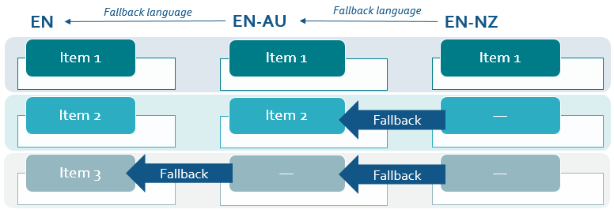
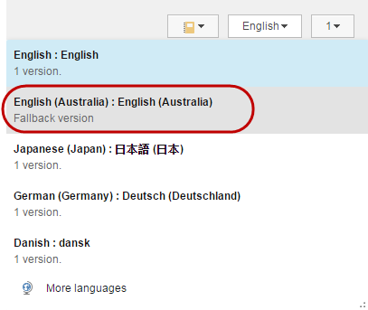
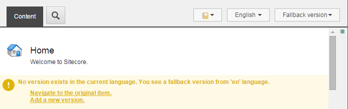
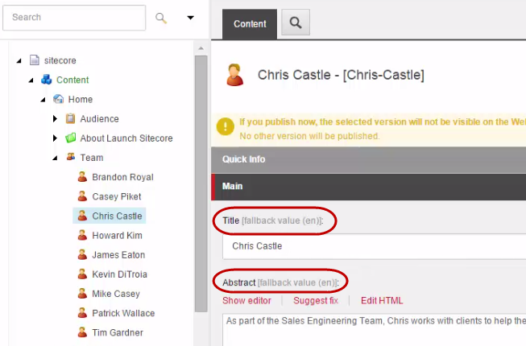

Language fallback
Control which items or fields reuse content from another language, and which items or fields that you want to localize.
In a multilanguage solution, you can use the language fallback functionality to control which items or fields that you want to reuse content from another language, and which items and fields that you want to translate.
You specify a fallback language for the languages in your Sitecore solution and enable language fallback on the relevant items or fields. If a version does not exist in a given language, language fallback activates, and the item or field value is displayed in the fallback language instead.
You can also set up a chain of language fallback. For example, you can specify the language en-NZ to fall back to en-AU and en-AU to fall back to en. If the version in en-AU does not exist for a particular item or field, then the version in en-NZ falls back to the version in en.
|  |
You can use language fallback on an item or field and developers can use it on all dictionary labels on a website.
In a multilanguage solution, you can ensure that untranslated language versions do not return empty items by enforcing version presence.
Note
You should not use both item- and field-level fallback on the same items at the same time because it makes it difficult to keep track of how language fallback affects your items and fields.
Item-level fallback enables you to set up an 'empty' item version in a given language so that it falls back to another language version, including all its fields. In this way, you can launch a new language version of your entire website without creating any items in the new language in the Content database.
For example, if your website is in standard English (en) and you want to launch a localized version of the same website for Australia (en-AU), you enable item-level fallback on the site and set up the language en-AU to fallback to en. Then you enable item-level fallback on the items or templates that you want to fall back to the standard English version. In this way, there is no actual version in English (Australia) available, but the fallback version from the language en is available instead.
For the items that you want to localize into Australian English, you create an actual version in the language en-AU. This will override all fallback functionality that may have been setup on the item.
In the Content Editor, in the language drop-down menu, the English (Australia) version of the item specifies that it is a fallback version.
|  |
In the Content Editor, if you switch to the English (Australia) fallback version:
The item is read only.
In the Version drop-down list, Fallback version is displayed instead of the numbered version.

A warning appears, notifying you that you are viewing a fallback version from the language en and that no version exists in the selected language. From the notification you can,
Click Navigate to the original item to view or edit the version in en.
Click Add a new version to create an actual version in the language en-AU. This overrides the fallback version in en.

In the Sitecore configuration, item-level fallback is disabled by default so you must enable item-level fallback on each relevant website and on each individual item or item template.
Field-level fallback enables you to specify on a single field, which field values that you want to localize and which field values that you want to fall back to another language.
If you set up field-level fallback, on the individual field, you can see that the value is a fallback value from another language version and from which language, for example (en).
|  |
Important
For performance optimization, field-level fallback is not supported on __Standard Values items or for shared fields, system fields, or fields that start with '__'. Media fields (under sitecore/templates/System/Media/Versioned/) are not considered system fields.
Dictionary items
Developers can also use the language fallback feature on all dictionary labels on a website. Item-level fallback is enabled by default on the template that dictionary entries are based on.